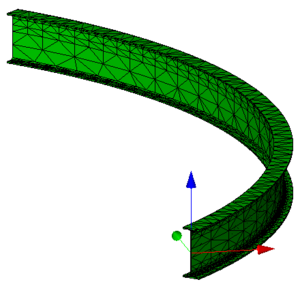

5.4.3.46 IfcRelAssociatesMaterial
5.4.3.46.1 Semantic definition
IfcRelAssociatesMaterial is an objectified relationship between a material definition and elements or element types to which this material definition applies.
The material definition can be:
- assigned to an element occurrence as a specific usage of a layer set or profile set
- assigned to an element occurrence or element type as a layer set, profile set, constituent set or a single material
Materials can be arranged by layers and applied to layered elements. Typical elements are walls and slabs.
- An IfcMaterialLayerSet, for layered elements with an indication of the layering direction and individual layer thicknesses
- An IfcMaterialLayerSetUsage, i.e. a material layer set with positioning information along the reference axis or surface of the element.
Material can be applied to profiles. Typical elements using profile material are beam, column, member
- An IfcMaterialProfileSet, i.e. a set of material assigned to a set of profiles, with a single material assigned to a single profile as the default.
- An IfcMaterialProfileSetUsage, i.e. a material profile set with positioning information relative to the element axis, also referred to as cardinal point.
Materials can be arranged by identified parts of a component based element. Typical elements are doors/windows (with components such as lining, framing and glazing), or distribution elements.
- An IfcMaterialConstituentSet, for component based elements with an indication of the component by keyword to which the material constituent applies.
As a fallback, or in cases where only a single material information is needed, material information can be directly associated
- A single IfcMaterial for any element where the material use definition does not prohibit its direct association
- An IfcMaterialList, e.g. for composite elements, without any information on how the different materials are arranged.
The IfcRelAssociatesMaterial relationship is a special type of the IfcRelAssociates relationship. It can be applied to subtypes of IfcElement and subtypes of IfcElementType.
- The IfcElement has an inverse relation to its material definition by the HasAssociations attribute, inherited from IfcObject.
- The IfcElementType has an inverse relation to its material definition by the HasAssociations attribute, inherited from IfcObjectDefinition.
If both, the element occurrence (by an instance of IfcElement) and the element type (by an instance of IfcElementType, connected through IfcRelDefinesByType) have an associated material, then the material associated to the element occurrence overrides the material associated to the element type.
Informal Propositions
- An IfcMaterialLayerSetUsage shall not be associated with a subtype of IfcElementType, it should only be associated with individual occurrences
- An IfcMaterialProfileSetUsage shall not be associated with a subtype of IfcElementType, it should only be associated with individual occurrences
5.4.3.46.2 Entity inheritance
5.4.3.46.3 Attributes
| # | Attribute | Type | Description |
|---|---|---|---|
| IfcRoot (4) | |||
| 1 | GlobalId | IfcGloballyUniqueId |
Assignment of a globally unique identifier within the entire software world. |
| 2 | OwnerHistory | OPTIONAL IfcOwnerHistory |
Assignment of the information about the current ownership of that object, including owning actor, application, local identification and information captured about the recent changes of the object, |
| 3 | Name | OPTIONAL IfcLabel |
Optional name for use by the participating software systems or users. For some subtypes of IfcRoot the insertion of the Name attribute may be required. This would be enforced by a where rule. |
| 4 | Description | OPTIONAL IfcText |
Optional description, provided for exchanging informative comments. |
| IfcRelAssociates (1) | |||
| 5 | RelatedObjects | SET [1:?] OF IfcDefinitionSelect |
Set of object or property definitions to which the external references or information is associated. It includes object and type objects, property set templates, property templates and property sets and contexts. |
| Click to show 5 hidden inherited attributes Click to hide 5 inherited attributes | |||
| IfcRelAssociatesMaterial (1) | |||
| 6 | RelatingMaterial | IfcMaterialSelect |
Material definition assigned to the elements or element types. |
5.4.3.46.4 Formal propositions
| Name | Description |
|---|---|
| AllowedElements |
The material information, using IfcMaterialSelect should be associated to an element occurrence (including structural members) or an element type. Also port can have assigned materials, here indicating the fluid flowing from the port. |
|
|
| NoVoidElement |
The material information must not be associated to a substraction feature (such as an opening) or to a virtual element. |
|
|
5.4.3.46.5 Concept usage
| Concept | Usage | Description | |
|---|---|---|---|
| IfcRoot (2) | |||
| Revision Control | General |
Ownership, history, and merge state is captured using IfcOwnerHistory. |
|
| Software Identity | General |
IfcRoot assigns the globally unique ID. In addition it may provide for a name and a description about the concept. |
|
| Click to show 2 hidden inherited concepts Click to hide 2 inherited concepts | |||
5.4.3.46.6 Examples
-

Figure 5.4.3.46.A -

Figure 5.4.3.46.B -

Figure 5.4.3.46.C -

Figure 5.4.3.46.D -

Figure 5.4.3.46.E -

Figure 5.4.3.46.F -

Figure 5.4.3.46.G -

Figure 5.4.3.46.H -

Figure 5.4.3.46.I -

Figure 5.4.3.46.J -

Figure 5.4.3.46.K -

Figure 5.4.3.46.L -

Figure 5.4.3.46.M -

Figure 5.4.3.46.N -

Figure 5.4.3.46.O -

Figure 5.4.3.46.P -

Figure 5.4.3.46.Q -

Figure 5.4.3.46.R -

Figure 5.4.3.46.S -
Figure 5.4.3.46.T -

Figure 5.4.3.46.U
5.4.3.46.7 Formal representation
ENTITY IfcRelAssociatesMaterial
SUBTYPE OF (IfcRelAssociates);
RelatingMaterial : IfcMaterialSelect;
WHERE
AllowedElements : SIZEOF(QUERY(temp <* SELF\IfcRelAssociates.RelatedObjects | (
SIZEOF(TYPEOF(temp) * [
'IFC4X3_ADD2.IFCELEMENT',
'IFC4X3_ADD2.IFCELEMENTTYPE',
'IFC4X3_ADD2.IFCSTRUCTURALMEMBER',
'IFC4X3_ADD2.IFCPORT']) = 0)
)) = 0;
NoVoidElement : SIZEOF(QUERY(temp <* SELF\IfcRelAssociates.RelatedObjects |
('IFC4X3_ADD2.IFCFEATUREELEMENTSUBTRACTION' IN TYPEOF(temp)) OR
('IFC4X3_ADD2.IFCVIRTUALELEMENT' IN TYPEOF(temp))
)) = 0;
END_ENTITY;